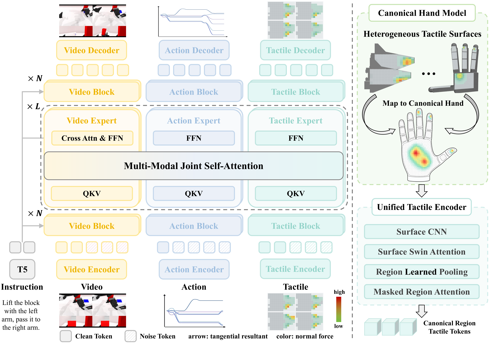
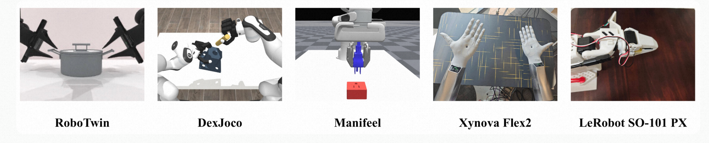

01
Joint future-state modeling
A three-expert Mixture-of-Transformers predicts future video, tactile latents, and action chunks together.
World Action Tactile Modeling
Unifying Heterogeneous Tactile Sensinginto World Action Modeling
A unified model for predicting future visual states, tactile states, and robot actions across grippers and dexterous hands.
State-of-the-Art Performance
Abstract
World Action Models predict future visual states to inform robot action generation. Tactile sensing directly captures contact states and force changes during physical interaction. Existing methods often treat tactile sensing as a conditioning input for action generation, thereby modeling only the current contact state. Instead, tactile signals should be modeled alongside video as future observations of the evolving world state. We present ME-Dex 1.0 (ME-Dex), a unified World Action Tactile Model for joint modeling of visual states, tactile states, and robot actions. ME-Dex adopts a Mixture-of-Transformers comprising a Video Expert, a Tactile Expert, and an Action Expert, all trained with flow matching. Multi-modal joint attention connects the three experts at intermediate layers, allowing action generation to exploit learned visual and tactile dynamics during joint generation. To support heterogeneous tactile inputs across embodiments, ME-Dex maps sensor surfaces to a Canonical Hand Model and encodes the aligned observations into a unified latent space with a Unified Tactile Autoencoder. We augment tactile-free simulation trajectories with synchronized tactile observations for joint visual, tactile, and action learning. On RoboTwin, DexJoCo, and ManiFeel, ME-Dex improves average manipulation success over the strongest baselines by 9.1, 8.9, and 15.0 percentage points, respectively. Qualitative rollouts on physical robots further demonstrate the use of visual and tactile observations across grippers and dexterous hands.
What ME-Dex contributes

A three-expert Mixture-of-Transformers predicts future video, tactile latents, and action chunks together.
A Canonical Hand Model and Unified Tactile Autoencoder align tactile observations across grippers and dexterous hands.
Tactile-free simulation trajectories are augmented with synchronized tactile observations for joint learning.

Simulation
Physical robots